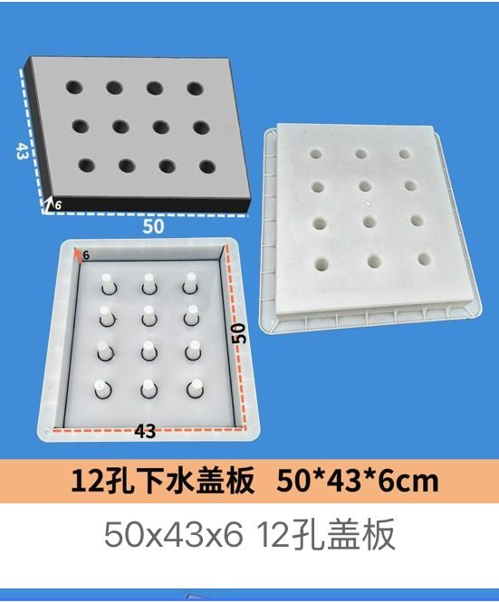
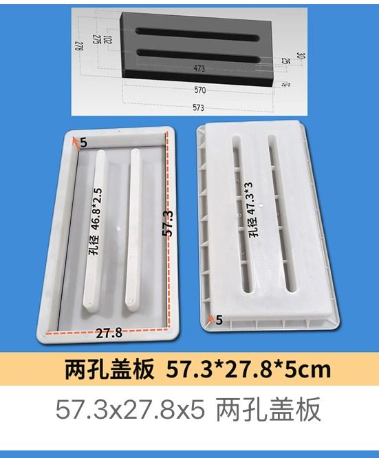

Representative Drainage Moulds
Six selected product examples to show the range without slowing down the website. More sizes and styles can be quoted from drawings or sample photos.

Custom Drainage Cover / Channel Mould
OEM drainage cover and channel profiles from drawings
Drainage Channel Side-Slab Set Mould
水沟板组合模具18 · width 40 cm

Twelve-Hole Drainage Cover Mould
12孔下水盖板 · 50 × 43 × 6 cm

Ten-Hole Drainage Cover Mould
十孔盖板 · 49.5 × 48.5 × 10 cm

Multi-Hole Drainage Cover Mould
多孔盖板 · 30 × 30 × 6 cm

Two-Hole Drainage Cover Mould
两孔盖板 · 57.3 × 27.8 × 5 cm